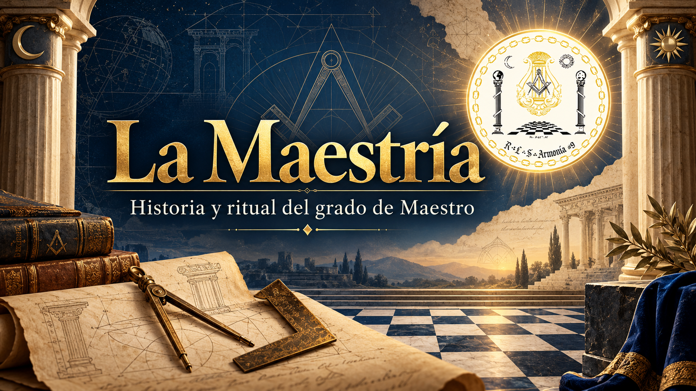
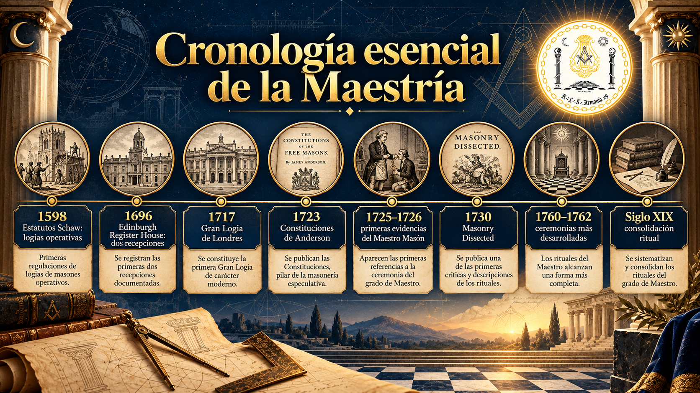

Historia y ritual · recorrido interactivo
R∴L∴S∴ Armonía № 9
La Maestría — historia y ritual del grado de Maestro Masón
El mapa de la investigación
Cronología esencial de la Maestría

El recorrido
Desliza la línea del tiempo
Selecciona una época, navega con las flechas ← → del teclado, o usa los botones. Cada época abre su ficha debajo.
La distinción esencial
Maestro de obra: oficio y dirección técnica. Maestro de logia: cargo de presidencia. Maestro Masón: grado de recepción ritual. Estas funciones no siempre estuvieron separadas.
Un cambio decisivo
Los cinco puntos aparecen en la recepción del Compañero en 1696 y adquieren una nueva función en la Maestría de 1730. La historia del grado es también la historia de cómo se reorganizó una ceremonia.
Pregunta abierta
Si hacia la década de 1730 el tercer grado todavía estaba consolidándose y ya comenzaban a circular ceremonias de Maestros Escoceses más allá de él, ¿qué impulsó a los masones a añadir nuevas enseñanzas después de la Maestría — hasta llegar con el tiempo a sistemas de catorce, veinticinco, treinta y tres o más grados? ¿Buscaban ampliar una experiencia que consideraban incompleta, preservar nuevas tradiciones, o dar un orden distinto al conocimiento recibido?
Ésa será otra investigación.
He dicho.
Fuentes
Fuentes y bibliografía
Los documentos que sostienen cada hito. Las fechas documentales no siempre representan el momento de invención de una práctica.